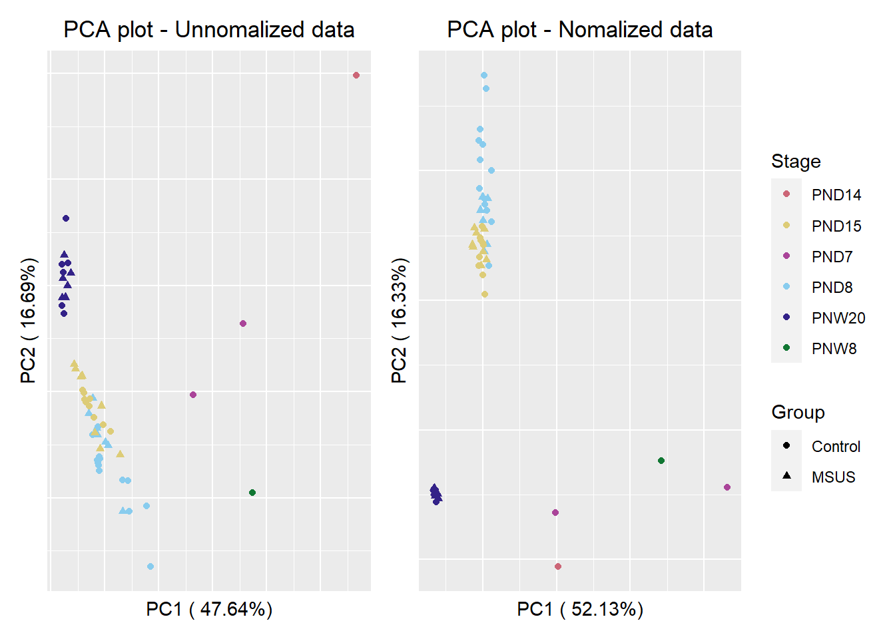
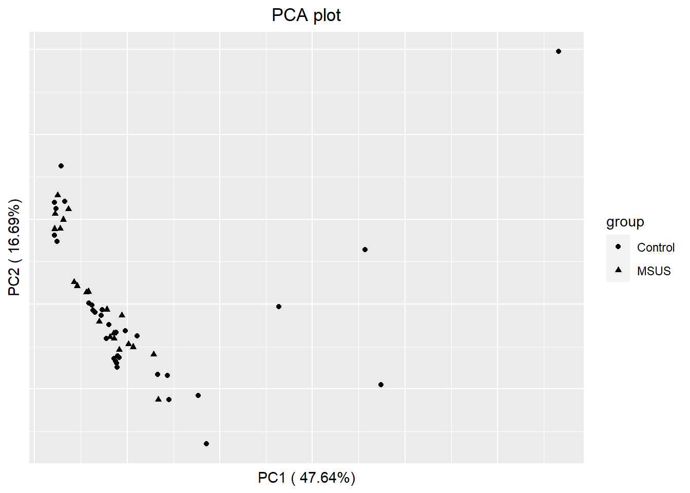

Preprocessed Plot
Last updated: 2021-03-31
Checks: 5 2
Knit directory: project6_bc2021/
This reproducible R Markdown analysis was created with workflowr (version 1.6.2). The Checks tab describes the reproducibility checks that were applied when the results were created. The Past versions tab lists the development history.
The R Markdown is untracked by Git. To know which version of the R Markdown file created these results, you’ll want to first commit it to the Git repo. If you’re still working on the analysis, you can ignore this warning. When you’re finished, you can run wflow_publish to commit the R Markdown file and build the HTML.
Great job! The global environment was empty. Objects defined in the global environment can affect the analysis in your R Markdown file in unknown ways. For reproduciblity it’s best to always run the code in an empty environment.
The command set.seed(20210323) was run prior to running the code in the R Markdown file. Setting a seed ensures that any results that rely on randomness, e.g. subsampling or permutations, are reproducible.
Great job! Recording the operating system, R version, and package versions is critical for reproducibility.
Nice! There were no cached chunks for this analysis, so you can be confident that you successfully produced the results during this run.
Using absolute paths to the files within your workflowr project makes it difficult for you and others to run your code on a different machine. Change the absolute path(s) below to the suggested relative path(s) to make your code more reproducible.
| absolute | relative |
|---|---|
| C:/Users/chabb/Desktop/ETHZ/3. Jahr/6. Semester/Blockkurs/2. Epigenetic mechanism/Project/project6_bc2021 | . |
| C:/Users/chabb/Desktop/ETHZ/3. Jahr/6. Semester/Blockkurs/2. Epigenetic mechanism/Project/project6_bc2021/data/counts_bins_apa.rds | data/counts_bins_apa.rds |
Great! You are using Git for version control. Tracking code development and connecting the code version to the results is critical for reproducibility.
The results in this page were generated with repository version 7511b10. See the Past versions tab to see a history of the changes made to the R Markdown and HTML files.
Note that you need to be careful to ensure that all relevant files for the analysis have been committed to Git prior to generating the results (you can use wflow_publish or wflow_git_commit). workflowr only checks the R Markdown file, but you know if there are other scripts or data files that it depends on. Below is the status of the Git repository when the results were generated:
Ignored files:
Ignored: .RData
Ignored: .Rhistory
Ignored: analysis/figure/
Untracked files:
Untracked: analysis/1_Preprocessed_plot_JC.Rmd
Untracked: analysis/2_Differential_Analysis_JC.Rmd
Untracked: analysis/3_Processed_plot_PND8_JC.Rmd
Untracked: analysis/4_Vignette_Plot_PND8_JC.Rmd
Untracked: apa.mm38.bed.gz
Untracked: data/counts_bins.rds
Untracked: data/counts_bins_apa.rds
Unstaged changes:
Deleted: code/Differential Analysis.Rmd
Deleted: code/Preprocessed plot.Rmd
Deleted: code/Processed plot - PND8.Rmd
Deleted: code/Vignette Plot - PND8.Rmd
Deleted: code/Vignette Plot - PND8.nb.html
Note that any generated files, e.g. HTML, png, CSS, etc., are not included in this status report because it is ok for generated content to have uncommitted changes.
There are no past versions. Publish this analysis with wflow_publish() to start tracking its development.
#Library
library(SummarizedExperiment)Le chargement a nécessité le package : MatrixGenericsLe chargement a nécessité le package : matrixStats
Attachement du package : 'MatrixGenerics'The following objects are masked from 'package:matrixStats':
colAlls, colAnyNAs, colAnys, colAvgsPerRowSet, colCollapse,
colCounts, colCummaxs, colCummins, colCumprods, colCumsums,
colDiffs, colIQRDiffs, colIQRs, colLogSumExps, colMadDiffs,
colMads, colMaxs, colMeans2, colMedians, colMins, colOrderStats,
colProds, colQuantiles, colRanges, colRanks, colSdDiffs, colSds,
colSums2, colTabulates, colVarDiffs, colVars, colWeightedMads,
colWeightedMeans, colWeightedMedians, colWeightedSds,
colWeightedVars, rowAlls, rowAnyNAs, rowAnys, rowAvgsPerColSet,
rowCollapse, rowCounts, rowCummaxs, rowCummins, rowCumprods,
rowCumsums, rowDiffs, rowIQRDiffs, rowIQRs, rowLogSumExps,
rowMadDiffs, rowMads, rowMaxs, rowMeans2, rowMedians, rowMins,
rowOrderStats, rowProds, rowQuantiles, rowRanges, rowRanks,
rowSdDiffs, rowSds, rowSums2, rowTabulates, rowVarDiffs, rowVars,
rowWeightedMads, rowWeightedMeans, rowWeightedMedians,
rowWeightedSds, rowWeightedVarsLe chargement a nécessité le package : GenomicRangesLe chargement a nécessité le package : stats4Le chargement a nécessité le package : BiocGenericsLe chargement a nécessité le package : parallel
Attachement du package : 'BiocGenerics'The following objects are masked from 'package:parallel':
clusterApply, clusterApplyLB, clusterCall, clusterEvalQ,
clusterExport, clusterMap, parApply, parCapply, parLapply,
parLapplyLB, parRapply, parSapply, parSapplyLBThe following objects are masked from 'package:stats':
IQR, mad, sd, var, xtabsThe following objects are masked from 'package:base':
anyDuplicated, append, as.data.frame, basename, cbind, colnames,
dirname, do.call, duplicated, eval, evalq, Filter, Find, get, grep,
grepl, intersect, is.unsorted, lapply, Map, mapply, match, mget,
order, paste, pmax, pmax.int, pmin, pmin.int, Position, rank,
rbind, Reduce, rownames, sapply, setdiff, sort, table, tapply,
union, unique, unsplit, which.max, which.minLe chargement a nécessité le package : S4Vectors
Attachement du package : 'S4Vectors'The following object is masked from 'package:base':
expand.gridLe chargement a nécessité le package : IRanges
Attachement du package : 'IRanges'The following object is masked from 'package:grDevices':
windowsLe chargement a nécessité le package : GenomeInfoDbLe chargement a nécessité le package : BiobaseWelcome to Bioconductor
Vignettes contain introductory material; view with
'browseVignettes()'. To cite Bioconductor, see
'citation("Biobase")', and for packages 'citation("pkgname")'.
Attachement du package : 'Biobase'The following object is masked from 'package:MatrixGenerics':
rowMediansThe following objects are masked from 'package:matrixStats':
anyMissing, rowMedianslibrary(ggplot2)
library(factoextra)Welcome! Want to learn more? See two factoextra-related books at https://goo.gl/ve3WBalibrary(reshape2)
library(patchwork)
library(rcartocolor)
library(limma)
Attachement du package : 'limma'The following object is masked from 'package:BiocGenerics':
plotMAlibrary(edgeR)
library(GenomicRanges)
library(SEtools)Warning: replacing previous import 'ComplexHeatmap::pheatmap' by
'pheatmap::pheatmap' when loading 'SEtools'library(dplyr)
Attachement du package : 'dplyr'The following object is masked from 'package:Biobase':
combineThe following objects are masked from 'package:GenomicRanges':
intersect, setdiff, unionThe following object is masked from 'package:GenomeInfoDb':
intersectThe following objects are masked from 'package:IRanges':
collapse, desc, intersect, setdiff, slice, unionThe following objects are masked from 'package:S4Vectors':
first, intersect, rename, setdiff, setequal, unionThe following objects are masked from 'package:BiocGenerics':
combine, intersect, setdiff, unionThe following object is masked from 'package:matrixStats':
countThe following objects are masked from 'package:stats':
filter, lagThe following objects are masked from 'package:base':
intersect, setdiff, setequal, union#Working directories and Data
setwd("C:/Users/chabb/Desktop/ETHZ/3. Jahr/6. Semester/Blockkurs/2. Epigenetic mechanism/Project/project6_bc2021")
se_apa <- readRDS("C:/Users/chabb/Desktop/ETHZ/3. Jahr/6. Semester/Blockkurs/2. Epigenetic mechanism/Project/project6_bc2021/data/counts_bins_apa.rds")#Colorblind color preparation
cols <- carto_pal(n = 9, "Safe")
colStage <- c(PND8 = cols[1], PND15 = cols[3], PND14 = cols[2], PNW8 = cols[4], PNW20 = cols[5], PND7 = cols[6])
colgroup <- c(cols[1],cols[2])
colgroup <- c(Control = cols[1], MSUS = cols[2])#PCA Plot - Unnormalized
#data preparation
counts <- assay(se_apa)
cd <- data.frame(colData(se_apa), stringsAsFactors = F)
#pca analysis
pr.out <- prcomp(t(counts))
pcaData<-data.frame(cd, pr.out$x)
#Percentage
percentage <- round(pr.out$sdev / sum(pr.out$sdev) * 100, 2)
percentage <- paste( colnames(pr.out$x), "(", paste( as.character(percentage), "%", ")", sep=""))
#Plot
p1 <- ggplot(pcaData, aes(x = PC1, y =PC2, shape=Group, color = Stage))+
geom_point() + xlab(percentage[1]) + ylab(percentage[2]) +
scale_color_manual(values=colStage) +
ggtitle("PCA plot - Unnomalized data") +
theme(plot.title = element_text(hjust = 0.5)) + theme(
axis.text.x = element_blank(),
axis.text.y = element_blank(),
axis.ticks = element_blank())
p1#PCA plot - Normalized
#Normalization
y <- DGEList(counts=counts, samples=cd, group=cd$Samples_ID)
y <- calcNormFactors(y)
norm_counts_pca <- cpm(y)
cpm2 <- melt(norm_counts_pca)
#pca analysis
pr.out2 <- prcomp(t(norm_counts_pca))
pcaData2<-data.frame(cd, pr.out2$x)
#percentage
percentage2 <- round(pr.out2$sdev / sum(pr.out2$sdev) * 100, 2)
percentage2 <- paste( colnames(pr.out2$x), "(", paste( as.character(percentage2), "%", ")", sep=""))
#Plot
p2 <- ggplot(pcaData2, aes(x = PC1, y =PC2, shape=Group, color = Stage))+
#geom_point(colour = colStage)
scale_color_manual(values=colStage) +
geom_point() + xlab(percentage2[1]) + ylab(percentage2[2]) +
ggtitle("PCA plot - Nomalized data") +
theme(plot.title = element_text(hjust = 0.5)) + theme(
axis.text.x = element_blank(),
axis.text.y = element_blank(),
axis.ticks = element_blank())
p2#Combined Plot
p1 + p2 + plot_layout(guides = "collect")
#PCA function
pca_se <- function(se, assay=1, group, ...){
counts <- t(data.frame(assays(se)[[assay]]))
pr.se <- prcomp(counts)
pcaData<-data.frame(data.frame(colData(se), stringsAsFactors = F), pr.se$x, stringsAsFactors = F)
df_out <- as.data.frame(pr.se$x)
percentage <- round(pr.se$sdev / sum(pr.se$sdev) * 100, 2)
percentage <- paste( colnames(df_out), "(", paste( as.character(percentage), "%", ")", sep="") )
pca_plot <- ggplot(pcaData, aes(x = PC1, y =PC2, shape=group, color = ...))+
geom_point() + xlab(percentage[1]) + ylab(percentage[2]) + ggtitle("PCA plot") + theme(plot.title = element_text(hjust = 0.5)) + theme(
axis.text.x = element_blank(),
axis.text.y = element_blank(),
axis.ticks = element_blank())
pca_plot
}
pca_se(se=se_apa, assay = 1, group=cd$Group, pcaData$Stage)
#Boxplot (not normalized)
#data preparation
setwd("C:/Users/chabb/Desktop/ETHZ/3. Jahr/6. Semester/Blockkurs/2. Epigenetic mechanism/Project/project6_bc2021")
se_apa <- readRDS("C:/Users/chabb/Desktop/ETHZ/3. Jahr/6. Semester/Blockkurs/2. Epigenetic mechanism/Project/project6_bc2021/data/counts_bins_apa.rds")
counts <- assay(se_apa)
cd <- data.frame(colData(se_apa), stringsAsFactors = F)
log.counts = log2(counts + 1)
#first plot
boxplot(counts,outline=FALSE, las=2)boxplot(log.counts,outline=FALSE,las=2)#data transformation
cpm <- melt(counts)
cpm_log <- melt(log2(counts+1))
#raw plot (not normalized)
ggplot(cpm, aes(x=Var2, y=value))+
geom_boxplot() + theme(axis.text.x = element_text(angle = 90)) +
labs(y= "Cpm", x = "Samples")#log2 plot (not normalized)
ggplot(cpm_log, aes(x=Var2, y=value))+
geom_boxplot() + theme(axis.text.x = element_text(angle = 90)) +
labs(y= "Cpm", x = "Samples")#Boxplot normalized
#Normalization
y <- DGEList(counts=counts, samples=cd, group=cd$Samples_ID)
y <- calcNormFactors(y)
norm_counts_log <- cpm(y, log = TRUE)
log_cpm <- melt(norm_counts_log)
head(log_cpm) Var1 Var2 value
1 ENSMUSG00000000001.4.1 Lab_Ribo0_PND8_Control_01_B -2.225621
2 ENSMUSG00000000001.4.2 Lab_Ribo0_PND8_Control_01_B -5.304361
3 ENSMUSG00000000001.4.3 Lab_Ribo0_PND8_Control_01_B -4.501236
4 ENSMUSG00000000001.4.4 Lab_Ribo0_PND8_Control_01_B -5.304361
5 ENSMUSG00000000001.4.5 Lab_Ribo0_PND8_Control_01_B -5.304361
6 ENSMUSG00000000001.4.6 Lab_Ribo0_PND8_Control_01_B -5.304361#Plot log2 normalized
ggplot(log_cpm, aes(x=Var2, y=value))+
geom_boxplot()+
coord_cartesian(ylim = quantile(log_cpm$value, c(0.01, 0.99)))+
theme(axis.text.x = element_text(angle = 90)) + labs(y= "Cpm", x = "Samples")#Colored by Group
#Merge
cpm3 <- inner_join(log_cpm, cd, by=c("Var2" = "Samples_ID"))
#Plot
ggplot(cpm3, aes(x=Var2, y=value, fill = Group))+
geom_boxplot()+
scale_fill_manual(values=colgroup)+
coord_cartesian(ylim = quantile(cpm2$value, c(0.01, 0.99))) +
theme(axis.text.x = element_text(angle = 90)) + labs(y= "Cpm", x = "Samples")#Facet
ggplot(cpm3, aes(x=Var2, y=value, fill = Group))+
geom_boxplot()+ scale_fill_manual(values=colgroup) +
coord_cartesian(ylim = quantile(cpm2$value, c(0.01, 0.99))) +
facet_wrap(~Stage, scales = "free_x") +
theme(
axis.text.x = element_blank(),
axis.text.y = element_blank(),
axis.ticks = element_blank()) +
ggtitle("Boxplot very nice") +
theme(plot.title = element_text(hjust = 0.5)) +
labs(y="Cpm", x= element_blank()) 
#UTR Heatmap
#Subsetting
rowranges <- data.frame(rowRanges(se_apa))
utr <- na.omit(rowranges$type == "UTR")
seUTR <- se_apa[utr,]
seUTRassay <- assay(seUTR)
#Plot
sechm(seUTR, genes=rownames(assay(seUTR))[1:10])Using assay logcpm
sessionInfo()R version 4.0.4 (2021-02-15)
Platform: x86_64-w64-mingw32/x64 (64-bit)
Running under: Windows 10 x64 (build 19042)
Matrix products: default
locale:
[1] LC_COLLATE=French_Switzerland.1252 LC_CTYPE=French_Switzerland.1252
[3] LC_MONETARY=French_Switzerland.1252 LC_NUMERIC=C
[5] LC_TIME=French_Switzerland.1252
attached base packages:
[1] parallel stats4 stats graphics grDevices utils datasets
[8] methods base
other attached packages:
[1] dplyr_1.0.5 SEtools_1.4.0
[3] edgeR_3.32.1 limma_3.46.0
[5] rcartocolor_2.0.0 patchwork_1.1.0.9000
[7] reshape2_1.4.4 factoextra_1.0.7
[9] ggplot2_3.3.3 SummarizedExperiment_1.20.0
[11] Biobase_2.50.0 GenomicRanges_1.42.0
[13] GenomeInfoDb_1.26.4 IRanges_2.24.1
[15] S4Vectors_0.28.1 BiocGenerics_0.36.0
[17] MatrixGenerics_1.2.1 matrixStats_0.58.0
[19] workflowr_1.6.2
loaded via a namespace (and not attached):
[1] bitops_1.0-6 fs_1.5.0 RColorBrewer_1.1-2
[4] rprojroot_2.0.2 tools_4.0.4 bslib_0.2.4
[7] utf8_1.2.1 R6_2.5.0 DBI_1.1.1
[10] colorspace_2.0-0 GetoptLong_1.0.5 withr_2.4.1
[13] tidyselect_1.1.0 curl_4.3 compiler_4.0.4
[16] git2r_0.28.0 Cairo_1.5-12.2 TSP_1.1-10
[19] DelayedArray_0.16.2 labeling_0.4.2 sass_0.3.1
[22] scales_1.1.1 stringr_1.4.0 digest_0.6.27
[25] rmarkdown_2.7 XVector_0.30.0 pkgconfig_2.0.3
[28] htmltools_0.5.1.1 highr_0.8 rlang_0.4.10
[31] GlobalOptions_0.1.2 farver_2.1.0 shape_1.4.5
[34] jquerylib_0.1.3 generics_0.1.0 jsonlite_1.7.2
[37] BiocParallel_1.24.1 zip_2.1.1 RCurl_1.98-1.3
[40] magrittr_2.0.1 GenomeInfoDbData_1.2.4 Matrix_1.3-2
[43] Rcpp_1.0.6 munsell_0.5.0 fansi_0.4.2
[46] lifecycle_1.0.0 stringi_1.5.3 yaml_2.2.1
[49] zlibbioc_1.36.0 Rtsne_0.15 plyr_1.8.6
[52] grid_4.0.4 randomcoloR_1.1.0.1 promises_1.2.0.1
[55] ggrepel_0.9.1 crayon_1.4.1 lattice_0.20-41
[58] circlize_0.4.12 locfit_1.5-9.4 knitr_1.31
[61] ComplexHeatmap_2.6.2 pillar_1.5.1 rjson_0.2.20
[64] codetools_0.2-18 glue_1.4.2 evaluate_0.14
[67] V8_3.4.0 data.table_1.14.0 foreach_1.5.1
[70] png_0.1-7 vctrs_0.3.6 httpuv_1.5.5
[73] gtable_0.3.0 purrr_0.3.4 clue_0.3-58
[76] assertthat_0.2.1 xfun_0.22 openxlsx_4.2.3
[79] later_1.1.0.1 seriation_1.2-9 tibble_3.1.0
[82] pheatmap_1.0.12 iterators_1.0.13 registry_0.5-1
[85] cluster_2.1.1 ellipsis_0.3.1